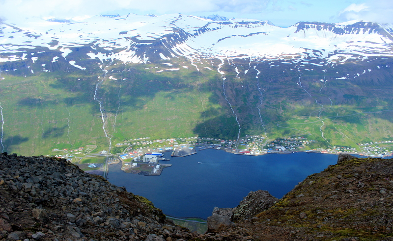

Well im from a little town in east Iceland with around thousand people and there is not much to do there and not alot of job opportunitys except for working in a aluminum factory, fish or at a small shop or a company so i wanted to try to move to a bigger city.

Im a 24 year old man who's soon becoming a father and i like to play and watch football and fitness, i have thought long and hard what i would like to do with my life and finally i found something i can actually study since ive never been good at school. I wouldnt say im 100% sure that my study here will become my future job but im as sure as i will ever be that i found something i do have interest in
i do have alot of work experience but that experience doesnt really matter here since ive mostly worked in fish, aluminum factory and as a some sort of a vikar. But i started working when i was 14 with school and ive done it ever since, either with school or without it, but my experience isnt much in multimedia designing, i was in a photoshop class for a semester once and thats probably the only experience i had before i came to this school.